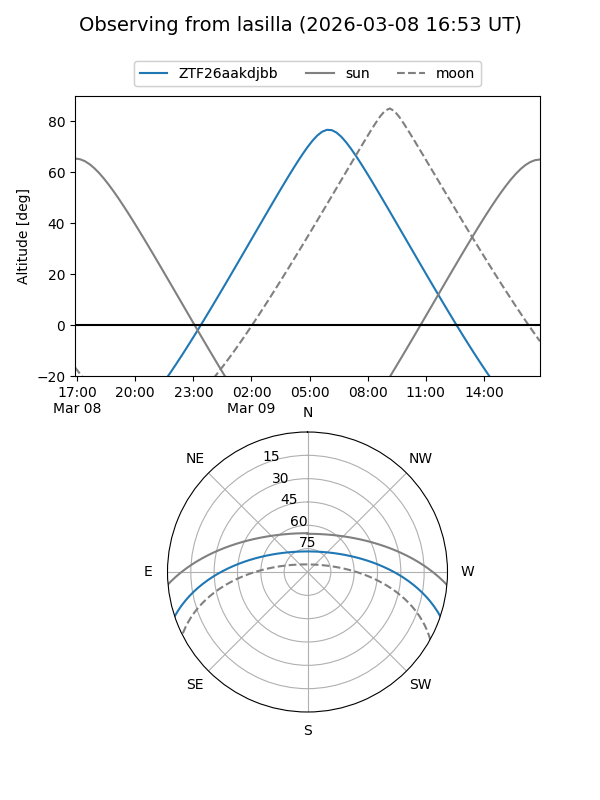
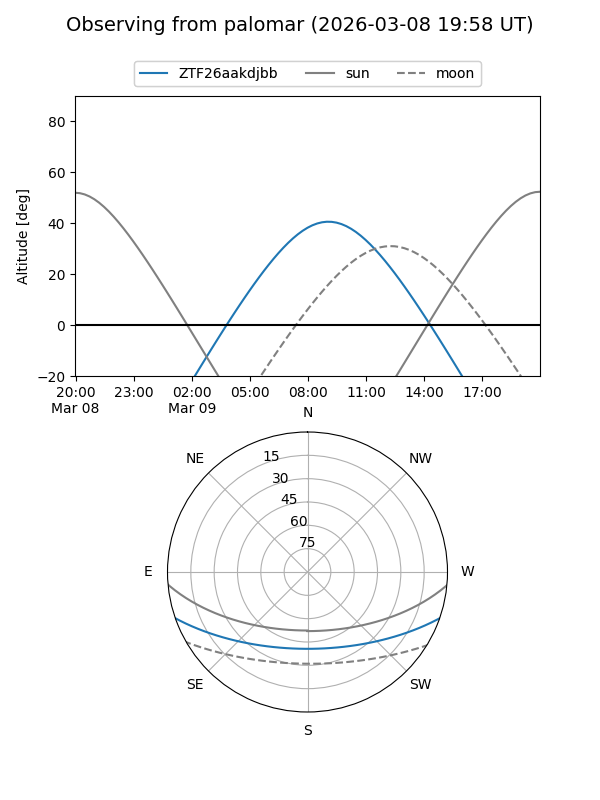

ZTF26aakdjbb
Target ZTF26aakdjbb at 2026-03-09 07:54
Aliases and brokers:
FINK: link
Lasair: link
ALeRCE: link
alt names
ZTF26aakdjbb (ztf,fink_ztf)
Coordinates:
equatorial (ra, dec) = 185.6352,-15.87922
equatorial (HMS+DMS) = 12:22:32.46,-15:52:45.21
galactic (l, b) = (292.8258,+46.42471)
Flags:
Photometry:
last ztfg=18.84
1 ztfg detections
Lightcurve
Visibility


Additional plots